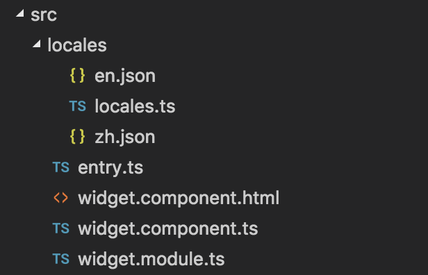

文件结构

en.json
zh.json
locales.ts
Widget.ts
\{\{"Hello Widget!" | translate\}\}
`
})
export class DemoWidgetComponent extends WidgetBase {
constructor(protected cdr: ChangeDetectorRef, public translateservice: TranslateService) {
super(cdr, translateservice);
}
ngAfterViewInit() {
}
protected locales() {
return locales;
}
}
@CTAFComponent({
templateUrl: 'widgetMultiLanguage.html'
})
export class DemoWidgetMultiLanguage extends ComponentBase {
a() {
this.context.language = this.context.language === 'zh' ? 'en' : 'zh';
}
}
]]>
widget 模板
]]>